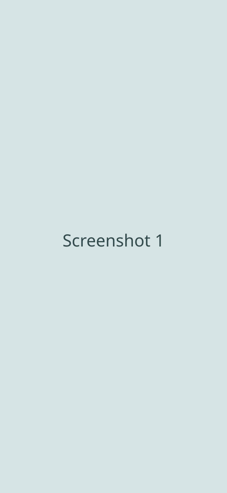
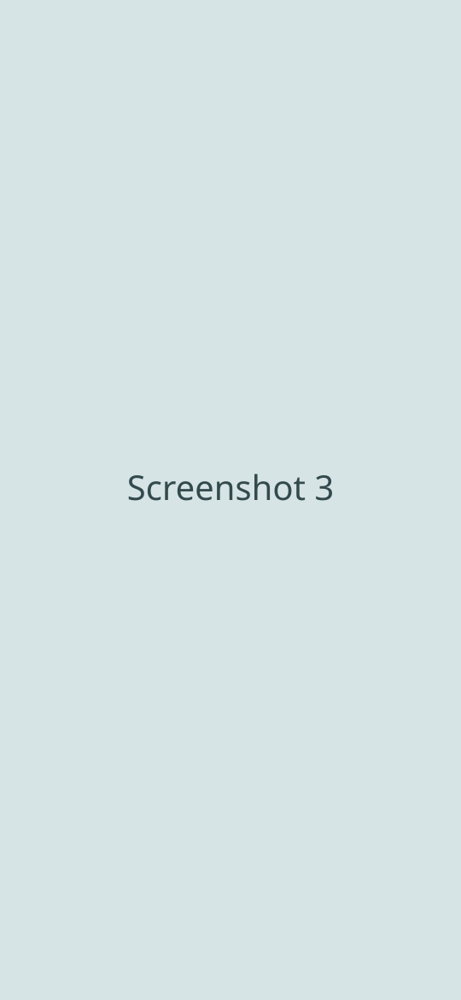

Limno
Người bạn đồng hành cho hồ thuỷ sinh nước ngọt: ghi thông số nước, nhận cảnh báo sớm, đi qua chu trình nitơ và chọn loài hợp nhau.
A companion for your freshwater aquarium: log water parameters, get early warnings, get through the nitrogen cycle and pick species that get along.


Miễn phí. Không cần tài khoản - dữ liệu hồ nằm trên máy bạn.
Free. No account needed - your tank data stays on your device.
Tính năngFeatures
Quản lý nhiều hồMultiple tanks
Khai kích thước, thể tích thực, nền, đèn, CO₂. App tự tính thể tích nước thật để mọi phép tính dùng đúng số.
Record dimensions, net volume, substrate, light and CO₂. Limno works out the real water volume so every calculation uses the right number.
Nhật ký thông số nướcWater parameter log
Ghi pH, NH₃/NH₄⁺, NO₂, NO₃, GH, KH, nhiệt độ... Biểu đồ có vùng mục tiêu và mốc sự kiện như thay nước, thêm cá.
Log pH, ammonia, nitrite, nitrate, GH, KH, temperature and more. Charts show target bands and event markers like water changes and new fish.
Cảnh báo thông minhSmart alerts
Phát hiện xu hướng xấu sớm, kèm nguyên nhân có thể và cách xử lý. NH₃ tự do được suy từ TAN, pH và nhiệt độ.
Spots bad trends early, with likely causes and what to do. Free ammonia is derived from TAN, pH and temperature.
Trợ lý chu trình nitơCycling assistant
Biết hồ đang ở giai đoạn nào, nên làm gì tiếp theo và vì sao chu trình bị đứng.
Know which stage your tank is in, what to do next and why the cycle might be stalling.
Tra cứu loài và độ hợpSpecies and compatibility
Tra cứu offline, tìm không dấu. Kiểm tra loài có hợp với hồ và với nhau trước khi thả, xem sức tải của hồ.
Browse offline and search forgivingly. Check whether a species fits your tank and its tankmates before adding it, and see your bioload.
Nhắc việc chăm sócCare reminders
Lịch thay nước, bón phân, vệ sinh lọc theo chu kỳ. Đánh dấu xong ngay từ thông báo hoặc widget.
Recurring water changes, fertilising and filter cleaning. Mark tasks done right from the notification or widget.
Công cụ tínhCalculators
Thể tích hồ, trộn nước thay, GH/KH mục tiêu, hạ NO₃, CO₂ từ pH và KH, liều muối, khử clo và thuốc.
Tank volume, water change mixing, target GH/KH, lowering nitrate, CO₂ from pH and KH, salt, dechlorinator and medication doses.
Ảnh chụp màn hìnhScreenshots

